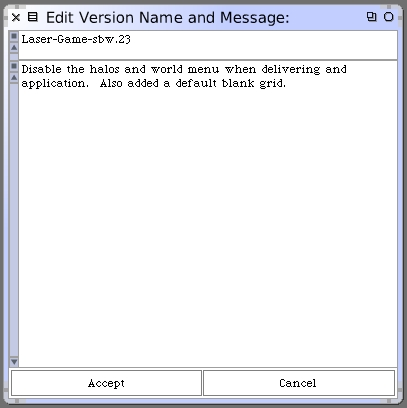
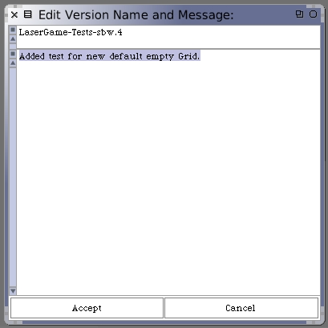

Our next step is to utilize this new blank grid in our game. We can make this the standard behavior, even without the full-world application configuration. Let's change the #initialize instance method of LaserGame.
initialize
self initializeForGrid: GridFactory emptyStandardGrid
Okay, let's confirm that all of our unit tests pass and then save both the Laser-Game and LaserGame-Tests packages.
 Now we should go through the same steps as before and make a new deliverable application. See this page as a reminder.
Check your new application that the World menu and halos are now disabled. Also, the game should open up with a blank grid.